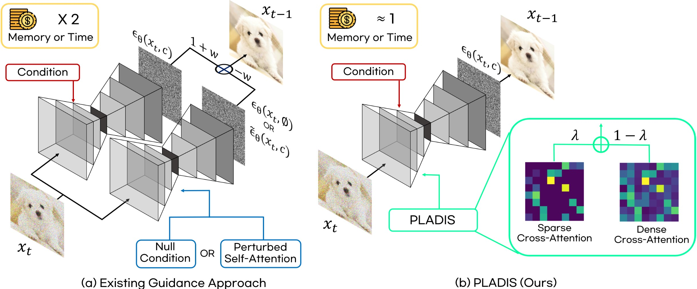

Concept Overview of PLADIS
Existing guidance methods require extra inference steps due to undesired paths, such as null conditions or perturbing self-attention with an identity matrix or blurred attention weights. In contrast, PLADIS avoids additional inference paths by computing both sparse and dense attentions within all cross-attention modules using a scaling factor, λ. Moreover, PLADIS can be easily integrated with existing guidance approaches and even guidance-distilled model by simply replacing the cross-attention module.
